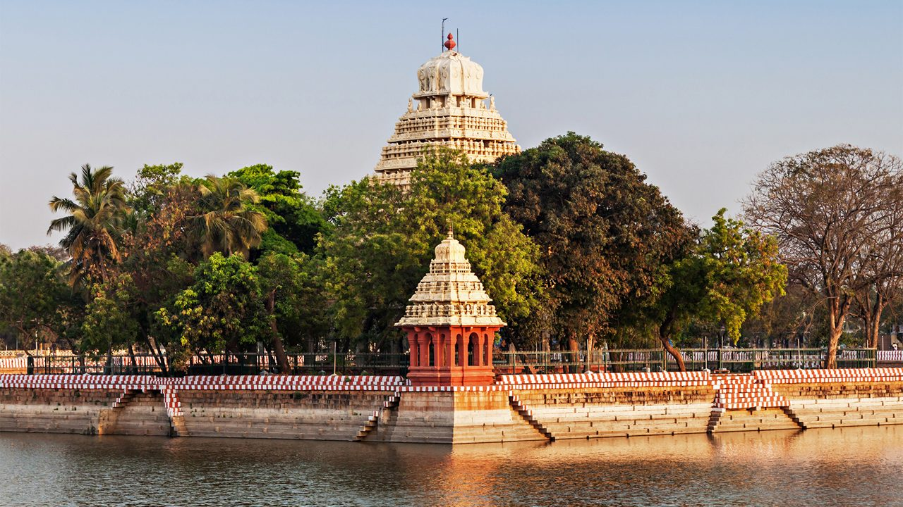
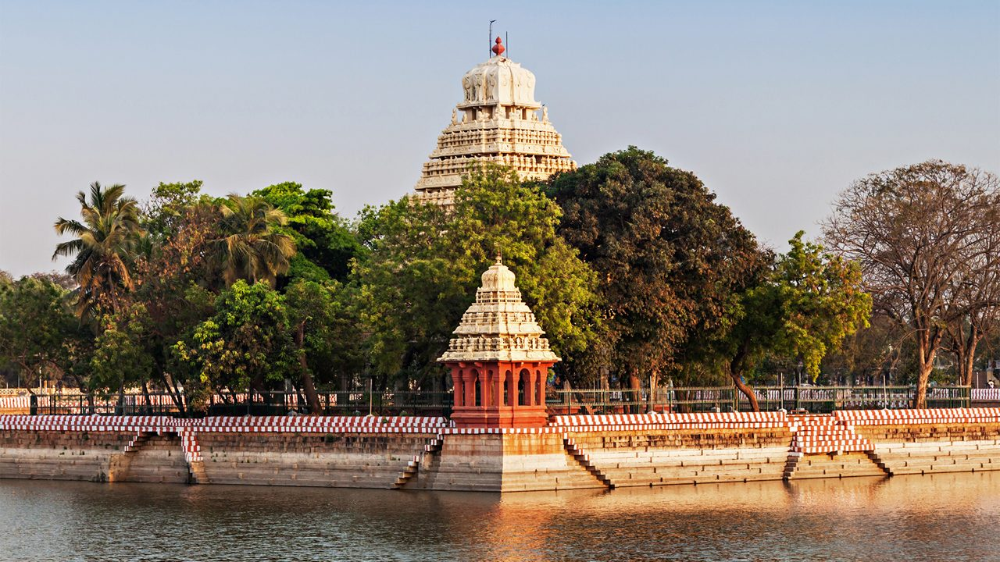

The Nilgiris, also known as the Blue Mountains, are a picturesque hill region located in the Western Ghats of Tamil Nadu. Famous for their cool climate, lush tea gardens, and scenic landscapes, the Nilgiris attract tourists from all over the world. The district’s major towns include Ooty, Coonoor, and Kotagiri.
Kodaikanal, often called the “Princess of Hill Stations,” is a beautiful hill town located in the Dindigul district of Tamil Nadu. Nestled in the Palani Hills of the Western Ghats, it is famous for its pleasant climate, misty mountains, and serene lakes. The name “Kodaikanal” means “Gift of the Forest” in Tamil — and it truly lives up to its name.
Madurai, located on the banks of the Vaigai River in Tamil Nadu, is one of the oldest continuously inhabited cities in India. Often called the “Athens of the East,” Madurai is famous for its rich cultural heritage, magnificent temples, and classical traditions.
Kanyakumari, located at the southernmost tip of India, is a place where the Arabian Sea, the Bay of Bengal, and the Indian Ocean meet. It is famous for its stunning sunrise and sunset views, rich culture, and spiritual significance. The town is named after Goddess Kanya Kumari, an incarnation of Goddess Parvati.

 
